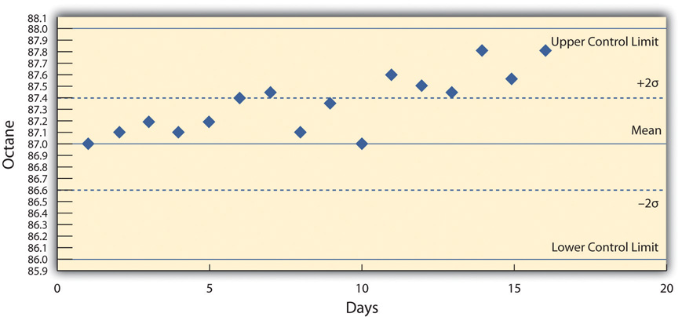
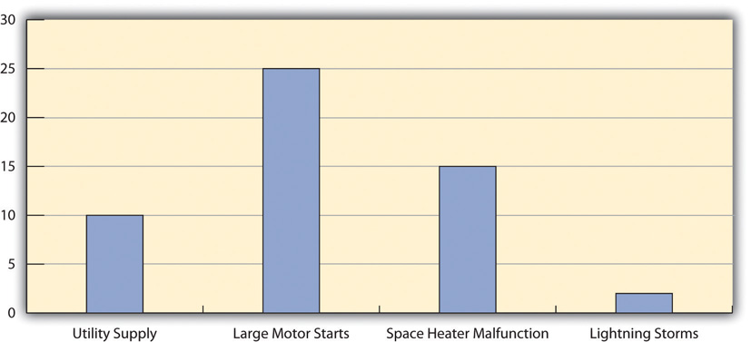
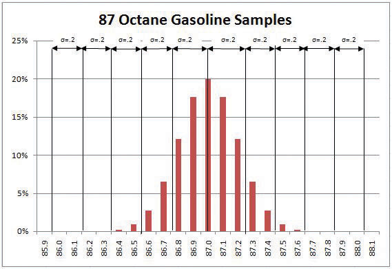

Project managers have two different interests in quality. Some projects are performed to provide a significant improvement in the quality of an existing process, and the project activities themselves must reflect high-quality standards. A basic knowledge of the statistics and procedures used in quality control will help the project manager understand the objectives of step projects and perform projects in companies that are committed to high-quality standards.
QualityDegree to which a set of inherent characteristics fulfill requirements. is a relative term, which means that something is of high or low quality compared to what it is required to be. According to the International Organization for Standardization (ISO), quality is “the degree to which a set of inherent characteristics fulfill requirements.”International Organization for Standardization, Quality Management Systems—Fundamentals and Vocabulary (Geneva: ISO Press, 2005), in Project Management Institute, Inc., A Guide to the Project Management Body of Knowledge (PMBOK Guide), 4th ed. (Newtown Square, PA: Project Management Institute, Inc., 2008), 190. The requirements of a product or process can be categorized or given a gradeCategory of product or service requirements.. The quality is determined by how well something meets the requirements of its grade. Consider the following examples.
Petroleum refiners provide gasoline in several different grades based on the octane rating because higher octane ratings are suitable for higher compression engines. Gasoline must not be contaminated with dirt or water, and the actual performance of the fuel must be close to its octane rating. A shipment of low-grade gasoline graded as 87 octane that is free of water or other contaminants would be of high quality, while a shipment of high grade 93 octane gas that is contaminated with dirt would be of low quality.
John has antique furniture that is in excellent condition that was left to him by his grandmother. The pieces are important to John for sentimental reasons and they are also valuable. John decides to hire movers (high-grade professionals) to load his furniture into the truck using appropriate padding and restraints to prevent dents and scratches during the long trip to Atlanta and then to unload the truck in Atlanta. John’s standard for high quality is that no observable damage occurs to his large pieces of furniture, especially the antiques. If the furniture arrives in his new apartment without a single dent, scratch, or other damage, the activity will be of high quality.
John’s standard for packing his kitchen is lower. His dishes are old and cheap, so he decides to trust his inexperienced friends (low-grade amateurs) to help him pack his kitchen. If a few of the dishes or glassware are chipped or broken in the process, the savings in labor cost will more than make up for the loss, and the dishes can be easily replaced. If John has a few chipped dishes and a broken glass or two by the time he is unpacked in Atlanta, he will consider the kitchen packing to be of high quality.
For most people, the term quality also implies good value—getting your money’s worth. For example, even low-grade products should still work as expected, be safe to use, and last a reasonable amount of time.
Determining how well products meet grade requirements is done by taking measurements and then interpreting those measurements. StatisticsMathematical interpretation of numerical data.—the mathematical interpretation of numerical data—is useful when interpreting large numbers of measurements and is used to determine how well the product meets a specification when the same product is made repeatedly. Measurements made on samples of the product must be between control limitsUpper and lower extremes of allowable variation.—the upper and lower extremes of allowable variation—and it is up to management to design a process that will consistently produce products between those limits.
A petroleum refinery produces large quantities of fuel in several grades. Samples of the fuels are extracted and measured at regular intervals. If a fuel is supposed to have an 87 octane performance, samples of the fuel should produce test results that are close to that value. Many of the samples will have scores that are different from 87. The differences are due to random factors that are difficult or expensive to control. Most of the samples should be close to the 87 rating and none of them should be too far off. The manufacturer has grades of 85 and 89, so they decide that none of the samples of the 87 octane fuel should be less than 86 or higher than 88.
If a process is designed to produce a product of a certain size or other measured characteristic, it is impossible to control all the small factors that can cause the product to differ slightly from the desired measurement. Some of these factors will produce products that have measurements that are larger than desired and some will have the opposite effect. If several random factors are affecting the process, they tend to offset each other most of the time, and the most common results are near the middle of the range. This idea is called the central limit theoremIdea that if variation is caused by several random factors, they will generally cancel each other out and most measurements will be near the middle of the range of variation..
If the range of possible measurement values is divided equally into subdivisions called binsEqual size ranges into which measurements are sorted to obtain a frequency distribution., the measurements can be sorted, and the number of measurements that fall into each bin can be counted. The result is a frequency distributionThe number of measurements that fall into defined bins. that shows how many measurements fall into each bin. If the effects that are causing the differences are random and tend to offset each other, the frequency distribution is called a normal distributionFrequency distribution that looks like a bell and is the result of offsetting random variations., which resembles the shape of a bell with edges that flare out. The edges of a theoretical normal distribution curve get very close to zero but do not reach zero.
A refinery’s quality control manager measures many samples of 87 octane gasoline, sorts the measurements by their octane rating into bins that are 0.1 octane wide, and then counts the number of measurements in each bin. Then she creates a frequency distribution chart of the data, as shown in Figure 10.1 "Normal Distribution of Measurements of Gasoline Samples".
If the measurements of product samples are distributed equally above and below the center of the distribution as they are in Figure 10.1 "Normal Distribution of Measurements of Gasoline Samples", the average of those measurements is also the center value that is called the meanAverage found by summing the values and dividing by the number of values. and is represented in formulas by the lowercase Greek letter µ (pronounced mu). The amount of difference of the measurements from the central value is called the sample standard deviation or just the standard deviationA type of average that takes into account positive and negative values where a sample is used instead of all the measurements. To calculate the standard deviation, first the difference between each value and the mean is squared. The squared values are summed and divided by the number of values minus one. The square root of this value is the standard deviation, also known as the Sample Standard Deviation.. The first step in calculating the standard deviation is subtracting each measurement from the central value and then squaring that difference. (Recall from your mathematics courses that squaring a number is multiplying it by itself and that the result is always positive.) The next step is to sum these squared values and divide by the number of values minus one. The last step is to take the square root. The result can be thought of as an average difference. (If you had used the usual method of taking an average, the positive and negative numbers would have summed to zero.) Mathematicians represent the standard deviation with the lowercase Greek letter σ (pronounced sigma). If all the elements of a group are measured, it is called the standard deviation of the population and the second step does not use a minus one.
Figure 10.1 Normal Distribution of Measurements of Gasoline Samples

The chart shows that the most common measurements of octane rating are close to 87 and that the other measurements are distributed equally above and below 87. The shape of the distribution chart supports the central limit theorem’s assumption that the factors that are affecting the octane rating are random and tend to offset each other, which is indicated by the symmetric shape. This distribution is a classic example of a normal distribution. The quality control manager notices that none of the measurements are above 88 or below 86 so they are within control limits and concludes that the process is working satisfactorily.
The refinery’s quality control manager uses the standard deviation function in his spreadsheet program to find the standard deviation of the sample measurements and finds that for his data, the standard deviation is 0.3 octane. She marks the range on the frequency distribution chart to show the values that fall within one sigma (standard deviation) on either side of the mean. See the figure below.
Figure 10.2

Most of the measurements are within 0.3 octane of 87.
For normal distributions, about 68.3 percent of the measurements fall within one standard deviation on either side of the mean. This is a useful rule of thumb for analyzing some types of data. If the variation between measurements is caused by random factors that result in a normal distribution and someone tells you the mean and the standard deviation, you know that a little over two-thirds of the measurements are within a standard deviation on either side of the mean. Because of the shape of the curve, the number of measurements within two standard deviations is 95.4 percent, and the number of measurements within three standard deviations is 99.7 percent. For example, if someone said the average (mean) height for adult men in the United States is 5 feet 10 inches (70 inches) and the standard deviation is about 3 inches, you would know that 68 percent of the men in the United States are between five feet seven inches (67 inches) and six feet one inch (73 inches) in height. You would also know that about 95 percent of the adult men in the United States were between five feet four inches and six feet four inches tall, and that almost all of them (99.7 percent) are between five feet one inches and six feet seven inches tall. These figures are referred to as the 68-95-99.7 ruleApproximate percentages of measurements that are within one, two, and three standard deviations of the mean..
The refinery’s quality control manager marks the ranges included within two and three standard deviations, as shown below.
Figure 10.3 The 68-95-99.7 Rule

Some products must have less variability than others to meet their purpose. For example, if one machine drills a hole and another machine shapes a rod that will slide through the hole, it might be very important to be sure that if the smallest hole was ever matched with the widest rod, that the rod would still fit. Three standard deviations from the control limits might be fine for some products but not for others. In general, if the mean is six standard deviations from both control limits, the likelihood of a part exceeding the control limits from random variation is practically zero (2 in 1,000,000,000). Refer to Figure 10.4 "Meaning of Sigma Levels".
Figure 10.4 Meaning of Sigma Levels

A new refinery process is installed that produces fuels with less variability. The refinery’s quality control manager takes a new set of samples and charts a new frequency distribution diagram, as shown below.
Figure 10.5 Smaller Standard Deviation

The refinery’s quality control manager calculates that the new standard deviation is 0.2 octane. From this, he can use the 68-95-99.7 rule to estimate that 68.3 percent of the fuel produced will be between 86.8 and 87.2 and that 99.7 percent will be between 86.4 and 87.6 octane. A shorthand way of describing this amount of control is to say that it is a five-sigma production system, which refers to the five standard deviations between the mean and the control limit on each side.
Using Statistical Measures
Choose two groups of people or items that have a measurable characteristic that can be compared, such as the height of adult males and females. Describe the distribution of the measurements by stating whether you think the groups have a relatively small or large standard deviation and whether the distributions overlap (e.g., some women are taller than some men even though the mean height for men is greater than the mean height for women). Demonstrate that you know how to use the following terms correctly in context:
Quality management is an approach to work that has become increasingly important as global cooperation and competition have increased. A review of the history of quality management explains why it is so important to companies and why clients often require projects to document their processes to satisfy quality standards.
Prior to the late 1700s, products such as firearms and clocks were made as individual works where the parts were adjusted to each other so they could work together. If a part broke, a new one had to be made by hand to fit. In 1790 in France, Honoré Blanc demonstrated that he could make musket parts so nearly identical that a musket could be assembled from bins of parts chosen at random.Ken Alder, “Innovation and Amnesia: Engineering Rationality and the Fate of Interchangeable Parts Manufacturing in France,” Technology and Culture 38, no 2 (April 1997): 273–311. The practice of making parts to a high level of accuracy in their dimensions and finishes made the parts interchangeable. The use of interchangeable parts became the founding principle of assembly line manufacturing to produce all manner of goods from sewing machines to automobiles. The manufacturers of firearms and weapons were often the leaders in improving quality because reliable and safe operation of weapons and their rapid repair is a matter of life and death.
During World War II, factories were converted from manufacturing consumer goods to weapons. War plants had to make large numbers of parts as fast as possible while doing it safely for the workers and for the service members who used them. Important improvements in quality control (QC)Management of production standards through statistical interpretation of random product measurements.—the management of production standards through statistical interpretation of random product measurements, which emphasizes consistency and accuracy—were made during this period. A key figure in the history of quality management who was an important person in the war effort was Walter Shewhart at Bell Telephone Laboratories. Shewhart recognized that real processes seldom behaved like theoretical random distributions and tended to change with time. He separated causes of variation into two categories: chance causeVariation due to random events. and assignable causeVariations that can be attributed to a particular event or influence.. Chance causes could be ignored if they did not cause too much variation, and trying to eliminate them often made the problem worse, but assignable causes could be fixed. To help distinguish between variations caused by random events and trends that indicated assignable causes, Shewhart introduced the control chartScatter chart with time on the horizontal axis and measurement scale on the vertical axis. It also displays the mean and control limits. It may mark two standard deviations from the mean., which is also known as a type of run chartChart of measurements that shows variations as the process progresses in time. because data are collected while the process is running. A control chart has time on the bottom axis and a plot of sample measurements. The mean, upper control limit, lower control limit, and warning lines that are two sigma from the mean are indicated by horizontal lines.
The refinery quality control manager takes samples each day of the 87 octane gasoline for twenty days and charts the data on a control chart, as shown below.
Figure 10.6 Control Chart Displaying Variations Due to Chance Causes

She recognizes that the highest and lowest measurements are not part of a trend and are probably due to chance causes. However, the control chart from the next twenty days, as shown below, indicates an upward trend that might be due to an assignable cause. She alerts the process manager to let him know that there is a problem that needs to be fixed before the product exceeds the upper control limit. This might indicate the need to initiate a project to fix the problem.
Figure 10.7 Control Chart Displaying Variations That Might Be Due to an Assignable Cause
The most influential person in modern quality control was an American who was a hero in Japan but virtually unknown in the United States. W. Edwards Deming worked with Shewhart at Bell Labs and helped apply Shewhart’s ideas to American manufacturing processes during World War II. Following the war, American factories returned to the production of consumer goods. Many of the other major manufacturing centers in the world had been damaged by bombing during the war and took time to recover. Without the safety needs of wartime and with little competition, quality control was not a high priority for American companies.John Dowd, “How the Japanese Learned to Compete,” Asia Times, October 27, 2006, http://www.atimes.com/atimes/Japan/HJ27Dh01.html (accessed August 11, 2009). Management in the United States focused on increasing production to meet demand and lowering costs to increase profits.
After the war, while the United States occupied Japan, Deming was asked by the U.S. Department of the Army to assist with the statistics of the 1950 census in Japan. Kenichi Koyanagi, the managing director of the Union of Japanese Scientists and Engineers and a very influential industrialist, asked Deming to speak to twenty-one top industrial leaders on the topic of global strategy for Japanese industry. Deming went beyond Shewhart’s work and talked about his philosophy of quality manufacturing and how the responsibility for quality begins with management. He explained that a corporate culture devoted to producing high-quality products would result in less waste, lower costs, greater client loyalty, and greater market share. With Koyanagi’s support, Deming’s ideas were widely adopted by these influential leaders.
Deming described his philosophy as a system of profound knowledge, which has four parts:
In 1950, the Japanese created the Deming prizeAward for quality in Japan named after W. Edwards Deming, an American. in Deming’s honor, which is awarded to an individual and a company for major advances in quality improvements. In 1960, Deming was awarded the Order of the Sacred Treasure, Second Class by the Prime Minister on behalf of Emperor Hirohito.
By the 1970s, Japanese companies had a reputation for high quality and were taking market share from American companies, but Deming’s teachings were virtually unknown in his own country. It was not until 1980 that America became aware of Deming when his work was described in an NBC documentary titled If Japan Can, Why Can’t We?John Dowd, “How the Japanese Learned to Compete,” Asia Times, October 27, 2006, http://www.atimes.com/atimes/Japan/HJ27Dh01.html (accessed August 11, 2009). By then, Deming was eighty years old and the producer of the show originally assumed he was dead.Thomas J. Boardman, “The Statistician Who Changed the World: W. Edwards Deming, 1900–1993,” The American Statistician 48 (August 1994): 179–87.
In 1982, Deming’s book was published and later retitled Out of Crisis, in 1986.W. Edwards Deming, Out of the Crisis (Boston: MIT Press, 1982). It was aimed at explaining his system to American manufacturers and the American public. In the book, Deming described fourteen principles of management to guide the implementation of his philosophy. Some of them were challenges to Western managers and very different from the thinking that was prevalent at the time. In brief, they are as follows:
Between 1979 and 1982, Ford Motor Company lost $3 billion, and they were looking for solutions to their problems. They chose to apply Deming’s approach to develop the new Taurus-Sable model and by 1986 had become the most profitable American auto company.Gabor, A. (2001, June 13). Quality revival, Part 2: Ford embraces Six Sigma. New York Times (Late Edition (east Coast)), p. C.5. Retrieved October 24, 2010, from ProQuest National Newspapers Core. (Document ID: 74042886).
Ford adopted a Japanese approach to quality known in America as total quality management (TQM)Philosophy of managing quality adapted from a Japanese method that includes kaizen, atarimae hinshitsu, kansei, and miryokuteki hinshitsu.. TQM in Japan has four major components:
According to Peter B. Petersen,Peter B. Petersen, “Total Quality Management and the Deming Approach to Quality Management,” Journal of Management History 5, no. 8 (1999): 468–88. TQM differs from the Deming approach in four fundamental ways:
Many poorly qualified consulting firms provided training in TQM to American companies. The approach worked in some cases but not in others where it was applied superficially, and the movement’s credibility was diminished.
Another approach to quality management in the United States was formulated at Motorola in 1986 and was named Six Sigma (6σ)Quality management system that give titles to specialists and requires a cost-benefit analysis.. The Six Sigma practices were based on Deming’s work, TQM, and others and had similarities regarding continuous efforts at improvement involving everyone at the company. It emphasized a clear focus on achieving quantifiable financial returns from any Six Sigma project. To determine the financial return on a quality initiative, the cost of quality (COQ)Total cost of efforts to improve quality plus the cost of failure. must be determined. The cost of quality has two parts: the cost of prevention and the cost of failure (or nonconformance). The cost of quality is the sum of the cost of prevention and the cost of failure. If spending more on prevention reduces the cost of failure by an even greater amount, the total cost of quality is reduced.
Cost of prevention
Cost of failure
Six Sigma identified individuals as experts in quality and awarded titles like Champion and Master Black Belt. The name Six Sigma refers to a process that has six standard deviations from the mean to either control limit that would ensure virtually zero defects. (In practice, the Six Sigma approach allows for a 1.5 sigma drift, so it is really a 4.5 sigma standard that allows approximately 3.4 defects per million products.) This approach was adopted by Jack Welch at General Electric with great success. By the late 1990s, about two-thirds of the top five hundred companies in the United States had begun Six Sigma projects, including Ford, which had allowed its quality programs to slip. To provide encouragement and a consistent standard, the U.S. government created the Malcolm Baldrige National Quality AwardU.S. award for quality named after a former secretary of commerce. in 1987 to encourage companies to improve quality; the award was named for Malcolm Baldrige who was the U.S. secretary of commerce from 1981 to 1987.National Institute of Standards and Technology, “Frequently Asked Questions about the Malcolm Baldrige National Quality Award,” November 25, 2008, http://www.nist.gov/baldrige/index.cfm (accessed August 14, 2009). The criteria used to determine award winners are as follows:
Trade between countries increased as countries recovered from WWII and began producing consumer goods. In 1948, the General Agreement on Tariffs and Trade (GATT) established the rules for international trade in the postwar world. Through years of negotiations based on GATT, the World Trade Organization (WTO)Negotiating forum for improving trade relationships between countries. was created in 1995. The WTO is a negotiating forum where governments can discuss ways to help trade flow as freely as possible.World Trade Organization, “Understanding the WTO: Basics,” http://www.wto.org/english/thewto_e/whatis_e/tif_e/fact1_e.htm (accessed August 14, 2009).
Increases in trade forced companies to improve the quality of their products to compete for clients and to exchange parts reliably between companies that used parts suppliers. To assist in developing standards for quality that would be the same between countries, an organization of 158 national standards groups formed the International Organization for Standardization (ISO)Degree to which a set of inherent characteristics fulfill requirements., which is headquartered in Switzerland. For example, a company might require a parts supplier to meet certain ISO standards if it wants to bid on contracts. There are thousands of ISO standards, and they are grouped by their numbers. The ISO 9000 group of standards relate to quality:
ISO 9001. Standards for evaluating the quality management processes in an organization. It has five parts:
Recommended steps for implementing a quality management system (QMS) are as follows:
Balancing Cost of Prevention to Cost of Failure
Describe a project activity where the cost of prevention might be much higher than the cost of failure and unlikely enough to accept the risk of its failure rather than pay the cost of prevention. Similarly, describe a project activity where the cost of prevention is smaller than the cost of failure.
Project quality refers to two distinct aspects of the project. Project quality can refer to the quality of the product or service delivered by the project. Does the end product meet client specifications? For example, does a software development project develop a program that performs to the client’s requirements? A software program that performs the basic work functions but does not integrate with existing software would not be considered a quality product, as long as the client specified that the software must interface with existing software.
Project quality can also refer to managing the project efficiently and effectively. Almost any client specification can be met if the project manager has unlimited time and resources. Recall that high quality means meeting the requirements for a particular grade while providing value. Meeting project deliverables within the time and resource constraints is also a measure of project quality. Developing a project execution plan that matches the complexity level of the project is the most critical aspect in developing a project plan that meets project specifications within the time frame and at the lowest costs. These two aspects of project quality have similarities and differences to quality as applied to parent organizations.
All successful quality programs have (1) a requirement for commitment to quality by all the employees and their partners and (2) an emphasis on error prevention and client satisfaction. To comply with TQM, Six Sigma, ISO, or other quality standards required by the client or by the project management firm, the project manager must engage in quality programs and provide documents that specifically comply with the quality standards in use. For example, a project is typically required to follow the parent organization’s work processes related to procurement and document management. Any project processes that interface with the organization’s quality processes will be required to meet the quality standards of the organization.
If a large project involves repetitive processes such as welding or pouring concrete, statistical processes control methods can be used to maintain the quality of the product. These processes control methods are similar to those used by process managers in the manufacturing environment. The intent is for the work of the project to meet design specifications. The welding tools and equipment must be sufficient to perform the welds established in the welding specifications, and the welds must be tested, usually by an independent tester, to assure the end product meets the design specifications. The civil engineers design a concrete pour to meet certain criteria that will support a structure. The criteria, detailed in the design specifications, provide the parameters that the construction crew must meet when pouring the concrete. On large projects, which sometimes have thousands of welds and hundreds of yards of concrete to pour, the use of quality control tools and methods are critical to meeting design specifications
Because projects are temporary, spotting trends in samples produced by repetitive processes is not as important as considering quality in the planning of the project. Instead, the project manager must be able to provide documentation that demonstrates that the correct processes are in place to prevent quality failures.
The cost of quality (COQ) must be considered in the scope document and the project budget. If the group or company that is providing the project management is separate from the client, the project budget will bear the cost of prevention while the client will reap the rewards of avoiding the costs of failure. If senior management does not recognize the benefit to the organization of reducing cost of failure by spending more on prevention during the project, the project manager can be placed in the position of producing a product or service that he or she knows could be of higher quality.
If the cost of quality is not specifically considered and approved by senior management in the scope of the project, quality might be sacrificed during the project to meet budget goals.
At a midwestern university, a new building was being built, but it was over budget. To reduce the cost of the energy management system and avoid a late penalty, the project manager installed a cheaper energy management system. The less expensive system could not reduce power to the air circulation fans during peak electrical price periods, and it was not compatible with other campus systems. Five years after the building was built, when a central control unit was installed to coordinate building energy consumption, the incompatible system was replaced because it could not communicate with the central campus energy control system or save as much in electrical costs. The university did not take the time to specify the quality of the building control system in the scope statement and was not aware of the implication of the substitution at the time it was made. As a result, the cost of quality was lower in the prevention category but much higher in the cost of failure category. Because the parties acted in their own interests instead of the interest of the total university and quality was not a team effort, waste occurred and total cost increased.
Some separation of responsibility for quality is necessary. For example, if a project is undertaken to build a facility that makes something, it is important to distinguish between the quality of the work done by the project team and the quality of the items produced after the project is over. The client provides specifications for the facility that should result in production of quality products. It is the client’s responsibility to provide appropriate project requirements that will result in a facility that can produce quality products. It is the project manager’s responsibility to meet the project requirements. The project manager must focus on meeting requirements for project activities, but as part of the quality team, opportunities to improve the quality of the final product should be discussed with the client. If the final products fail to meet quality standards, someone will be blamed for the failure. It could be the project manager, even if he or she met all the requirements of the project specified by the client.
An electronic parts manufacturer chooses to expand operations and needs to hire and train fifty employees. It uses its own human resources department to handle the selection and hiring of the employees, but it contracts with a nearby technical college to provide some of the training. The technical college is responsible for designing and delivering training on the topic of plant safety practices. The objective of the training project is to reduce the number of workplace accidents, but that is not the characteristic by which the quality of the training program is determined because the rate of accidents for employees who go through the training will not be known until after they have been employed for months or years. The criteria for determining the quality of the training must be something that can be controlled and measured by the project manager during the project.
Because projects are time sensitive, meeting activity finish dates is a common characteristic of quality work on a project that is not typical of a requirement of a process manager.
At a remote mining site in South America, the gasoline and diesel fuel must be brought in by truck over poorly maintained roads to run the trucks and heavy equipment used to set up an ore processing facility. The vendor for supplying fuel is required to provide fuel in the right grades for the various vehicles, in the appropriate quantities, and in a timely manner. If fuel of the right type and grade, with acceptable levels of impurities, is delivered a week after the vehicles have run out of fuel, the work on the fuel-delivery activity is of low quality.
Cost of Failure after the Project
Consider a project you have been involved in, in which the cost of prevention would be part of the project budget but the cost of failure would be incurred after the project was completed. Describe why you think top management would have to be involved to make the best decision for the company.
High quality is achieved by planning for it rather than by reacting to problems after they are identified. Standards are chosen and processes are put in place to achieve those standards.
During the execution phase of the project, services and products are sampled and measured to determine if the quality is within control limits for the requirements and to analyze causes for variations. This evaluation is often done by a separate quality control group, and knowledge of a few process measurement terms is necessary to understand their reports. Several of these terms are similar, and it is valuable to know the distinction between them.
The quality plan specifies the control limits of the product or process; the size of the range between those limits is the toleranceVariation allowed on either side of the mean, often shown with the ± symbol to mean plus or minus.. Tolerances are often written as the mean value, plus or minus the tolerance. The plus and minus signs are written together, ±.
The petroleum refinery chose to set its control limits for 87 octane gasoline at 86 and 88 octane. The tolerance is 87 ± 1.
Tools are selected that can measure the samples closely enough to determine if the measurements are within control limits and if they are showing a trend. Each measurement tool has its own tolerances. For example, if a machine is making rods whose diameters should be 10 mm ± 0.01 mm, you need a measuring device that can accommodate a rod that is 10 mm wide but can measure that width to a much smaller tolerance than 0.01 mm, such as 0.001 mm.
The choice of tolerance directly affects the cost of quality (COQ). In general, it costs more to produce and measure products that have small tolerances. The costs associated with making products with small tolerances for variation can be very high and not proportional to the gains. For example, it might double the manufacturing cost to improve a process from a 4 σ to a 5 σ (lower tolerances from 25 percent of control limits to 20 percent), which might only reduce the number of parts that are out of control from 4 per 100,000 to 6 per 10 million (see Figure 10.4 "Meaning of Sigma Levels"). The cost of failure of only 4 parts per 100,000 might be much less than the cost of prevention.
Clients provide specifications for the project that must be met for the project to be successful. Meeting project specifications is one definition of a project success. Clients often have expectations that are more difficult to capture in a written specification. For example, one client will want to be invited to every meeting of the project and will then select the ones that seem most relevant. Another client will want to only be invited to project meetings that need client input. Inviting this client to every meeting will cause unnecessary frustration. Listening to the client and developing an understanding of the expectations that are not easily captured in specifications is important to meeting the client’s expectations.
Project surveys that capture how the client perceives the project performance provide the project team with data that is useful in meeting client expectation. If the results of the surveys indicate that the client is not pleased with some aspect of the project, the project team has the opportunity to explore the reasons for this perception with the client and develop recovery plans. The survey can also help define what is going well and what needs improved.
Planning for quality is part of the initial planning process. The early scope, budget, and schedule estimates are used to identify processes, services, or products where the expected grade and quality should be specified. Risk analysis is used to determine which of the risks the project faces could affect quality.
Several different tools and techniques are available for planning and controlling the quality of a project. The extent to which these tools are used is determined by the project complexity and the quality management program in use by the client.
The quality management methodology required by the client is used. The project manager must provide the documentation the client needs to prove compliance with their methodology. There are several different quality management methodologies, but they usually have characteristics that are similar to the ones described previously in the text.
Many processes are more complicated than a simple sequence of related events that include several different paths. A flowchartDiagram of processes that have branches and loops based on decisions. uses standard symbols to diagram a process that has branches or loops. Diamonds indicate decisions, and arrows indicate the direction of the flow of the process, as shown in Figure 10.8 "Flowchart of a Quality Control Process".
Figure 10.8 Flowchart of a Quality Control Process

The process used to plan and assess quality can be described using flowcharts. They are useful for communicating processes that have logical branches that can be determined by simple yes or no questions. Flowcharting is also useful for discovering misunderstanding in project roles and responsibilities and communicating responsibility for work processes.
When products like shoes were made by hand, artisans would seek some degree of standardization by marking standard lengths for different parts of the product on their workbench. In modern management practice, if a particular method or product is a standard of quality, comparing your organization’s quality plan to it is called benchmarkingComparison of practices to standards or best practices in the same industry.. If a product or service is similar to something that is done in another industry or by a competitor, the project planners can look at the best practices that are used by others and use them as a comparison.
Because the cost of prevention is more often part of the project budget, the case must be made for increasing the project budget to raise quality. Some quality management programs, like Six Sigma, require that expenditures for quality are justified using a cost-to-benefit analysis that is similar to calculating the cost of quality, except that it is a ratio of cost of increasing quality to the resulting benefit. A cost-benefit analysis in some quality programs can take into account nonfinancial factors such as client loyalty and improvements to corporate image and the cost-to-benefit analysis takes the form of a written analysis rather than a simple numeric ratio. It is similar to determining the cost of quality (COQ).
Measuring for quality of manufactured products or use of repetitive processes requires taking samples. Specialists in quality control design a test regimen that complies with statistical requirements to be sure that enough samples are taken to be reasonably confident that the analysis is reliable. In project management, the testing experiments are designed as part of the planning phase and then used to collect data during the execution phase.
If some of the functions of a project are repetitive, statistical process controls can be used to identify trends and keep the processes within control limits. Part of the planning for controlling the quality of repetitive processes is to determine what the control limits are and how the process will be sampled.
When control charts indicate an assignable cause for a variation, it is not always easy to identify the cause of a problem. Discussions that are intended to discover the cause can be facilitated using a cause-and-effect or fishbone diagramGraphic representation of the contributing causes of a quality problem. where participants are encouraged to identify possible causes of a defect.
For example, a small manufacturing firm tries to identify the assignable causes to variations in its manufacturing line. They assemble a team that identifies six possibilities, as shown in the fishbone diagram below.
Figure 10.9 Cause and Effect Diagram

Each branch of the diagram can be expanded to break down a category into more specific items.
An engineer and the electrician work on one of the branches to consider possible causes of power fluctuation and add detail to their part of the fishbone diagram, as shown below.
Figure 10.10 Possible Causes of Power Fluctuation

When several quality problems need to be solved, a project manager must choose which ones to address first. One way to prioritize quality problems is to determine which ones occur most frequently. This data can be collected using a check sheetForm for recording the frequency of quality problems., which is a basic form on which the user can make a check in the appropriate box each time a problem occurs or by automating the data collection process using the appropriate technology. Once the data are collected, they can be analyzed by creating a type of frequency distribution chart called a histogramColumn chart that displays frequency of occurrence on the vertical axis.. A true histogram is a column chart where the width of the columns fill the available space on the horizontal axis and are proportional to the category values displayed on the x axis, while the height of the columns is proportional to the frequency of occurrences. Most histograms use one width of column to represent a category, while the vertical axis represents the frequency of occurrence.
The engineer and electrician place a recording meter on the electrical supply to the manufacturing area and instruct the building automation system to keep a log of voltage coming into the plant from the local utility and when it starts and stops large electrical fan motors. They create a check sheet to track the number of times that power dips or spikes due to lighting strikes or electric space heater malfunctions. They collect the data, count the number of occurrences in each category, and then chart the number of occurrences in a histogram, as shown below.
Figure 10.11 Histogram Showing Frequency of Power Problems by Likely Cause
A variation on the histogram is a frequency distribution chart invented by economist Vilfredo Pareto known as a Pareto chartColumn chart that shows frequency on the vertical axis sorted from largest to smallest with a line that shows the cumulative total., in which the columns are arranged in decreasing order with the most common on the left and a line added that shows the cumulative total. The combination of columns and a line allows the user to tell at a glance which problems are most frequent and what fraction of the total they represent.
The engineer creates a Pareto chart by sorting the data and adds a line to show total problems, as shown below. He concludes that about half of the electrical voltage problems are caused when one of the large electrical fan motors on the same circuit as the manufacturing line is shut down to conserve electricity by the energy management system and then restarted.
Figure 10.12 Pareto Chart with Problems in Decreasing Order and a Line Showing a Cumulative Total
The quality plan is produced during the initiation phase. The methods, procedures, and logic are described to demonstrate a commitment to a project of high quality. The plan identifies the products or services that will be measured and how they will be measured and compared to benchmarks. A flowchart demonstrates the logic and pathways to improve the plan.
During the execution phase, data are collected by measuring samples according to the design specified in the plan. The data are charted and analyzed. If variations are due to assignable causes, change requests are created.
Quality Management Plan
Consider a project in which you have been involved where there was a quality management plan or where such a plan was missing. Describe the effect of having or not having such a plan.
The purpose of quality assurance is to create confidence that the quality plan and controls are working properly. To assure quality, time must be allocated to review the original quality plan and compare that plan to how quality is being created during the execution of the project.
The flowcharts of quality processes are compared to the processes followed during actual operations. If the plan was not followed, the process is analyzed and corrective action taken. The corrective action could be to educate the people involved on how to follow the quality plan or to revise the plan.
The experiments that sample products and processes and collect data are examined to see if they are following statistically valid sampling techniques and that the measurement methods have small enough tolerances to detect variation within control limits.
Because projects are temporary, there are fewer opportunities to learn and improve within one project if it has a short duration, but even in short projects, the quality manager should have a way to learn from experience and change the process for the next project of a similar complexity profile.
The technical college responsible for training employees in safe plant practices evaluates its instructor selection process at the end of the training to see if it had the best criteria for selection. For example, it required the instructors to have Masters degrees in manufacturing to qualify as college instructors. The college used an exit survey of the students to ask what they thought would improve the instruction of future classes on this topic. Some students felt that it would be more important to require that the instructors have more years of training experience, while others recommended that the college seek certification as a training center by the Occupational Safety and Health Administration (OSHA).Occupational Safety and Health Administration, OSHA Training Institute Education Center Fact Sheet, July 3, 2007, http://www.osha.gov/dte/oti/index.html (accessed August 7, 2009). The college considered these suggestions and decided to retain its requirement of a Masters degree but add a requirement that the instructor be certified by OSHA in plant safety.
For additional confidence and assurance, an outside group can come in and review the quality procedures and accuracy of the data. This process is similar to a financial audit and is called a quality auditReview of the quality plan, procedures, data collection, and analysis by an outside group.. The purpose of a quality audit is to compare the stated quality goals of the project against the actual practice and procedures that are used. It is not a certification of the quality of the products themselves.
Customer Confidence
Consider a product that has suffered from a failure in its quality. Describe how the company handled the problem and its effect on your personal perception of the company and your confidence in buying its products.
Exercises at the end of the chapter are designed to strengthen your understanding and retention of the information recently acquired in the chapter.
Write several paragraphs to provide more in-depth analysis and consideration when answering the following questions.
The exercises in this section are designed to promote exchange of information among students in the classroom or in an online discussion. The exercises are more open ended, which means that what you find might be completely different from what your classmates find, and you can all benefit by sharing what you have learned.
Real production processes are never perfect. In some cases, a few products that are too small or that do not work will just cause inconvenience, but in other cases they might be life threatening. Samples of the production process will show how much variation occurs. If it appears that the variations are distributed equally above and below the mean (average), it might be assumed that the statistics of a normal distribution can be used to predict the percentage of products that will be defective when many of them are produced even if none of the samples are defective.
Some projects are initiated to increase the quality by reducing the variation in production. To understand the language of statistics and how it is used to justify a project, it is useful to gain a “feel” for how the distribution of samples is described by the standard deviation. A spreadsheet can be used to simulate samples of production runs where the mean and standard deviation can be chosen to show their relationship in a normal distribution. By trying different values for the standard deviation and observing the effect on the distribution of estimated samples in a chart, you can develop a sense of how the two are related.
Recall that a standard deviation is called a sigma and represented by the Greek letter σ and the 68-95-99.7 rule refers to the percentage of samples that will be within one, two, and three standard deviations of the mean.
Complete the exercise by following these instructions:
Notice the following features of the spreadsheet:
Compare the chart in the spreadsheet to the chart in Figure 10.13 "Normal Distribution of Gasoline Samples" that was used in the text. Observe that the standard deviation, σ, is .2 and that almost all the sample values occur between 86.4 and 87.6—three σ on either side of the mean.
Switch back to the spreadsheet. To see the effect of a better production process that would have a σ of .1 instead of .2, click cell L3. Type .1 and then, on the Formula bar, click the Enter button. The distribution narrows so that almost all the estimated samples are within .3 on either side of the mean (87.0), as shown in Figure 10.14 "Normal Distribution with Smaller Standard Deviation".
In the spreadsheet, in cell L3, type .4 and then, on the Formula bar, click the Enter button. Notice that a larger standard deviation means the distribution is more spread out. Three standard deviations is 1.2 (3 × .4), so almost all the samples will be within 1.2 on either side of the mean, as shown in Figure 10.15 "Normal Distribution with Larger Standard Deviation".
The effects of a lower-than-expected octane rating in a passenger car might be engine knock during acceleration and less power climbing a hill, but the effect of lower-than-expected octane fuel in a military aircraft might mean that the plane could not achieve the desired altitude or speed in a critical situation. Aviation gasoline is designed for use in high-performance engines that require 100 octane fuel. Use the spreadsheet to examine the estimated distribution of gasoline samples with a different mean and σ.
Complete the exercise by following these instructions:
Review your work and use the following rubric to determine its adequacy:
| Element | Best | Adequate | Poor |
|---|---|---|---|
| File name | Ch10STDStudentName.doc | Same or .docx file format | Student name missing |
| Predict likely range of values in a normal distribution | Five screen captures plus a reflective essay on what you learned about predicting the upper and lower limits defined by 3 σ | Same as Best | Missing pictures; essay does not describe how the upper and lower limits of 3 σ are calculated |
W. Edwards Deming teaches that some variation is inevitable due to chance cause. A manager needs to recognize the difference between variations that are due to chance and those that indicate the presence of an assignable cause or a trend. If it appears that there is an assignable cause for variation in quality, a project manager might be required to identify and fix the problem. To communicate with process managers who are monitoring and sampling production, it is useful to understand the use of control charts.
A run chart is a type of chart that shows variations from the mean as a function of time. The value of each sample is plotted to show the day it was taken and how it differs from the mean. If the variation is random, there will be roughly the same number of points above and below the mean.
A spreadsheet can be used to simulate random variations in production. In this exercise, the spreadsheet uses its random number function to pick two numbers that are positive and two that are negative and adds them to the mean. Each number represents a variation that is between the control limits. Most of the time the positive and negative numbers cancel each other out and result in a sum that is close to the mean, but occasionally the four random factors add up to values that are far from the mean.
In this part of the exercise, you observe variations in a run chart and frequency distribution chart that are due to random effects. You generate the random numbers several times to see what production runs with random (unassignable) variations look like.
Complete the exercise by following these instructions:
Scroll the screen or adjust the zoom so that you can see both charts. See Figure 10.16 "Screen Adjusted to Show Both Charts".
Press the F9 key several more times until you get a set of samples that are grouped close to the mean like the example shown in Figure 10.17 "Most Samples near the Mean".
Press the F9 key again and stop at a set of samples that has a greater variation, such as the example shown in Figure 10.15 "Normal Distribution with Larger Standard Deviation".
Complete the exercise by following these instructions:
An assignable cause can be mixed in with the chance-cause random effects. In this part, you introduce a factor that causes the samples to display a trend. You run the simulation several times to learn how to recognize a set of data that is a mix of random (chance-cause) factors and a trend that is probably from an assignable cause.
Press the F9 key several times and observe how this trend appears within the samples such as the example in Figure 10.19 "Trend That Is Probably Due to an Assignable Cause".
Review your work and use the following rubric to determine its adequacy:
| Element | Best | Adequate | Poor |
|---|---|---|---|
| File name | Ch10RunChartStudentName.doc | Ch10RunChartStudentName.docx | Did not include name in file name |
| Recognize assignable and unassignable causes of statistical variation | Three screen captures that show two random causes and one assignable cause; an essay that describes how to recognize the difference and the effect on worker morale if a run with low random variation is chosen as a standard | Same as Best | Missing screen; essay does not address both requirements |